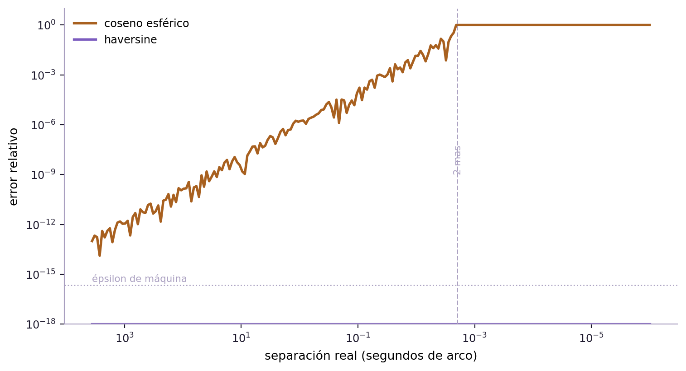

Primer post de la serie sobre esfera celeste y astronomía.
Fecha de publicación
29 de agosto de 2026
Parece una pregunta elemental, y lo es. Pero no se resuelve con nada de lo que aprendemos en la secundaria, porque las estrellas no están sobre un plano: las vemos sobre una esfera.
En la esfera, el Teorema del Coseno tiene otra forma, la suma de los ángulos de un triángulo ya no da 180°, y dos triángulos con los mismos ángulos son necesariamente el mismo triángulo (con las mismas medidas).
Primero: ¿cómo se le pone dirección a una estrella?
Una estrella está tan lejos que su distancia a la Tierra, para este problema, no nos importa. Lo que nos interesa para ubicarla es hacia dónde hay que mirar para encontrarla.
Por eso se piensa a todo el cielo como una esfera de radio arbitrario con la Tierra en el centro: la esfera celeste. Cada objeto es un punto sobre ella.
Sobre esa esfera se usa una grilla calcada de la terrestre. El ecuador celeste es la proyección del ecuador terrestre; los polos celestes son los puntos de intersección con las prolongaciones del eje de rotación de la Tierra; los paralelos celestes son los círculos paralelos al ecuador, y los meridianos los semicírculos máximos que pasan por los polos. La eclíptica es la trayectoria aparente del Sol.
¿Cómo nos ubicamos en el cielo? Usamos estas dos magnitudes:
la declinación\(\delta\), que es la latitud celeste: el ángulo desde el ecuador hacia el polo, de \(-90°\) a \(+90°\);
la ascensión recta\(\alpha\), que es la longitud celeste: el ángulo medido a lo largo del ecuador desde una dirección fija convenida, el punto vernal — una de las dos intersecciones de la eclíptica con el ecuador celeste, la que corresponde al equinoccio de otoño en Argentina.
Figura 1: La esfera celeste: ecuador, polos, un meridiano, un paralelo de declinación constante y la eclíptica. Una estrella queda determinada por su ascensión recta \(\alpha\) y su declinación \(\delta\).
Distancia entre dos estrellas: Primer intento
Con dos coordenadas en la mano, la tentación es usar la fórmula de distancia que muchos ya conocemos:
El problema es que \(\alpha\) y \(\delta\)no se comportan como \((x,y)\): los círculos de ascensión recta constante son meridianos, y los meridianos se juntan en los polos.
Dicho de otro modo: un grado de declinación mide siempre lo mismo, pero un grado de ascensión recta mide cada vez menos a medida que subís. El teorema de Pitágoras no funciona en la esfera.
¿Cuánto se aprietan los meridianos?
Si el problema es ese, calculemos el factor de corrección.
Una estrella a declinación \(\delta\) está a una altura \(\sin\delta\) sobre el plano del ecuador, y a una distancia \(\cos\delta\) del eje de rotación. Su paralelo es entonces una circunferencia de radio \(\cos\delta\), y cuando la ascensión recta aumenta en \(\Delta\alpha\), la estrella recorre un arco de longitud \(\cos\delta \cdot \Delta\alpha\) sobre esa circunferencia.
Con ese factor, la corrección natural es
\[
d \;\approx\; \sqrt{(\Delta\delta)^2 + (\cos\delta \, \Delta\alpha)^2}.
\tag{2}\]
Esta fórmula está en muchísimo código de astronomía y de geodesia, y para pares cercanos funciona muy bien. Pero tiene dos fallas:
El paralelo no es el camino más corto. Salvo el ecuador, los paralelos no son círculos máximos de la esfera.
No hay un \(\delta\) que usar. Si las dos estrellas están a declinaciones distintas, ¿cuál va adentro del coseno?
Lo que conseguimos es una aproximación local. Y hay algo en común entre todos estos intentos: arrancan de \(\alpha\) y \(\delta\) e intentan arreglar una fórmula plana. Tirémoslas y empecemos de nuevo.
El problema era empezar por las coordenadas
Una estrella es pura dirección. Y en \(\mathbb{R}^3\) una dirección se representa con un versor: un vector de longitud 1.
Si \(\mathbf{u}\) y \(\mathbf{v}\) son versores, el producto escalar entre ellos es directamente el coseno del ángulo que forman, y ese ángulo es la longitud de arco que buscamos:
\[
\cos d = \mathbf{u} \cdot \mathbf{v}.
\tag{3}\]
Esa es la respuesta. Sin aproximaciones, sin casos particulares, sin importar dónde estén las estrellas. Todo lo que falta es escribirla en las coordenadas de la esfera celeste.
Los versores
La declinación se mide desde el ecuador y va de \(-90°\) a \(+90°\), así que la componente vertical es \(\sin\delta\): vale 0 en el ecuador, \(-1\) en el polo sur y \(1\) en el norte. Lo que queda proyectado sobre el plano del ecuador es un vector de largo \(\cos\delta\), y su ángulo dentro de ese plano, medido desde el punto vernal, es justamente la ascensión recta. Entonces
Notá que la no uniformidad de la grilla aparece sola, como el factor \(\cos\delta\) que multiplica a las dos componentes horizontales. No hubo que corregir nada a mano.
Y de ahí sale el teorema
Reemplazando Ecuación 4 en Ecuación 3, sacando factor común y usando la identidad del coseno de la diferencia:
La fórmula es correcta. Pero si la usamos para calcular la distancia entre dos estrellas muy cercanas, falla.
El motivo es que la distancia queda dentro de un coseno que hay que despejar, y el coseno de un ángulo chico es casi exactamente 1. Para dos estrellas separadas por un segundo de arco, \(\cos d\) difiere de 1 en menos de \(10^{-11}\): toda la información sobre la distancia vive en ese número pequeñísimo.
Las computadoras guardan los números reales con una cantidad fija de cifras. En doble precisión, 64 bits, la resolución relativa cerca de 1 es de unos \(2{,}2 \times 10^{-16}\) — el épsilon de máquina, el escalón más chico que se puede distinguir. Al restar se pierden unas diez de las dieciséis cifras significativas.
Cuando la separación baja de unos 2 milisegundos de arco, \(\cos d\) está tan cerca de 1 que redondea a 1 y la fórmula devuelve cero. Dos estrellas distintas, y la computadora dice que su separación es cero.
Ver el código de la figura
import numpy as npimport matplotlib.pyplot as pltVIOLETA, NARANJA, TINTA, GRIS ="#7c5cbf", "#a8601f", "#1e1a2e", "#a99fc0"# separaciones de prueba, en radianes: de 1 grado a 1 microsegundo de arcod_real = np.logspace(np.log10(np.radians(1)), np.log10(np.radians(1/3.6e9)), 220)# dos estrellas sobre el ecuador, separadas exactamente d_real en ascension rectad1 = d2 =0.0a1 =0.0a2 = d_real# formula del coseno esfericocos_d = np.sin(d1)*np.sin(d2) + np.cos(d1)*np.cos(d2)*np.cos(a1 - a2)d_coseno = np.arccos(np.clip(cos_d, -1, 1))# formula del haversinehav =lambda x: np.sin(x/2)**2h = hav(d2 - d1) + np.cos(d1)*np.cos(d2)*hav(a2 - a1)d_hav =2*np.arcsin(np.sqrt(np.clip(h, 0, 1)))err_cos = np.abs(d_coseno - d_real) / d_realerr_hav = np.abs(d_hav - d_real) / d_realeps = np.finfo(float).epsfig, ax = plt.subplots(figsize=(8, 4.4))seg_arco = np.degrees(d_real) *3600ax.loglog(seg_arco, np.maximum(err_cos, 1e-18), color=NARANJA, lw=2, label="coseno esférico")ax.loglog(seg_arco, np.maximum(err_hav, 1e-18), color=VIOLETA, lw=2, label="haversine")ax.axhline(eps, color=GRIS, lw=1, ls=":")ax.text(seg_arco[0], eps*1.6, "épsilon de máquina", fontsize=8, color=GRIS)ax.axvline(0.002, color=GRIS, lw=1, ls="--")ax.text(0.0023, 1e-9, "2 mas", fontsize=8, color=GRIS, rotation=90, va="bottom")ax.set_xlabel("separación real (segundos de arco)")ax.set_ylabel("error relativo")ax.invert_xaxis()ax.set_ylim(1e-18, 10)ax.legend(frameon=False, fontsize=9)ax.spines[["top", "right"]].set_visible(False)ax.spines[["left", "bottom"]].set_color(GRIS)ax.tick_params(colors=TINTA, labelsize=9)fig.tight_layout()plt.show()

Figura 2: Error relativo de las dos fórmulas al calcular separaciones cada vez más chicas, en doble precisión. El coseno esférico se degrada como la raíz del épsilon de máquina y colapsa a cero por debajo de unos 2 milisegundos de arco; el haversine mantiene la precisión hasta separaciones absurdamente pequeñas.
Esto se llama cancelación catastrófica, y es traicionera porque no falla con un error: falla devolviendo un número plausible que está mal.
La versión que se usa en la práctica
La solución es reescribir la fórmula. Se define el haversine de un ángulo:
Es equivalente a Ecuación 5, pero del lado derecho quedan todos términos no negativos: no hay ninguna resta que pueda cancelarse. Por eso, en la figura de arriba, la curva violeta se mantiene plana donde la naranja se desploma.
El nombre viene de las tablas de navegación del siglo XIX, donde esta función estaba tabulada precisamente para este cálculo. Es una abreviatura de half versed sine: la mitad del seno verso, \(\operatorname{versin}(\theta) = 1 - \cos\theta\).
La misma idea en otros lugares
Cambiá declinación por latitud y ascensión recta por longitud, multiplicá por el radio terrestre, y tenés la distancia ortodrómica entre dos ciudades: la longitud del arco más corto sobre la superficie, que es la que recorre un avión.
Cambiá una de las dos direcciones por el cenit —el punto del cielo justo arriba tuyo— y el ángulo que sale es la distancia cenital de un astro: cuánto le falta para estar en la vertical. Ese es el problema de dónde apuntar un telescopio.
Cambiala por la dirección del Sol y tenés el ángulo de incidencia sobre un panel solar, que es lo que determina cuánta energía recibe.